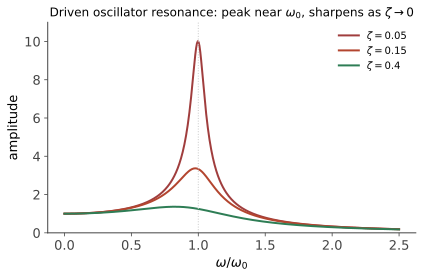

本页目录
力学 IV · 振动与刚体
对标：Goldstein §4–6 / Landau §5–6 ｜ 前置：mech-02/03、高代 V–VI（本页是它的物理主场） 力学收官的两大专题：小振动理论——"任何稳定平衡附近的世界都是耦合谐振子"，其求解就是一次广义特征值分解（线性代数的物理加冕）；刚体转动——惯量张量与 Euler 方程，"网球拍定理"的出处。
学习层：先把两个二次型对角化，再问刚体会不会翻
1. 具体玩具：两个坐标、两个度量、两本稳定性账
取一个透明的二自由度线性化模型
\(M\) 是动能二次型，\(K\) 是平衡点附近的势能 Hessian。把 \(K a=\omega^2 M a\) 展开，特征多项式为
所以两支是 \((\omega^2,\omega)=(2,\sqrt2)\) 与 \((8,2\sqrt2)\)；可选模向量为 \(a_1=(2,1)\)、\(a_2=(2,-1)\)，且
普通点积并不负责“正交”；在振动问题中正交的内积是 \(M\)-内积。然后换一本账：取刚体主惯量 \(I_1<I_2<I_3\)，无力矩 Euler 方程的线性化说极小、极大惯量轴稳定，中间轴不稳定。这是无力矩、主轴、微扰下的局部结论，不是“任何刚体运动都绕极值轴稳定”的万能句。
实验的惯量张量取为
其主惯量为 \(1,3,5\)，对应主轴为 \((1,1,0)/\sqrt2\)、\((1,-1,0)/\sqrt2\) 和 \((0,0,1)\)。
2. 精确桥梁：小振动的广义谱与惯量主轴
令 \(\eta=q-q^0\)，二阶 Lagrangian 给出
代入 \(\eta=a e^{i\omega t}\) 即得广义特征问题 \(Ka=\omega^2Ma\)。当 \(M\succ0\)、\(K\succeq0\) 时，\(M\)-正交模可组成完整基；\(\omega^2<0\) 则表示线性化不稳定方向，\(\omega^2=0\) 是零模/中性方向。这里的频率与模是平衡点附近的线性化结果，不能直接当成大振幅非线性轨迹的精确解。
刚体惯量张量总满足 \(I=I^\top\succeq0\)；只有当质量不全部落在一条穿过支点的直线上时才有 \(I\succ0\)。本实验的张量确实正定，因此由谱定理得到三条正交主轴。随体主轴中
在轴 \(2\) 附近取 \(\omega_2\approx\Omega\)，微扰满足
\(I_1<I_2<I_3\) 时系数为正，因而是指数放大；绕轴 \(1\)、\(3\) 的对应系数为负，给出振荡型线性稳定。符号来自三条 Euler 方程的循环次序，不能只凭“中间数最大/最小”背公式。
3. 预测门：先猜频率、内积和适用边界
提交前先预测：
- 上述广义特征值是 \(2,8\) 还是 \(1,4\)？哪一个模是低频模？
- \(a_1=(2,1)\) 与 \(a_2=(2,-1)\) 是普通欧氏正交，还是 \(M\)-正交？
- SVG 中的模叠加是否等于任意大振幅非线性运动？
- 对无力矩且三个主惯量严格有序的刚体，中间轴的线性化稳定性应记为稳定还是不稳定？能否把它推广成所有受力刚体的结论？
改变模叠加或观察时间会重新锁门；轴与自旋率只改变揭示后的刚体账本，不改变“中间轴定理”的预测题。
4. 动手实验：一张谱账、一张惯量账
揭示后可选择低频模、高频模或两模叠加，调节观察时间、主轴和无量纲自旋率。左侧 SVG 画有限时间窗内的线性化位移轨迹，右侧画 \(xy\) 平面中的两条主轴，并用出平面标记表示 \(z\) 轴；表格同时列出 \(Ka-\omega^2Ma\) 的残差、\(M\)-范数、主轴惯量以及 \(\sigma^2\) 与 \(\sigma^2/\Omega^2\)。轨迹是确定性采样，非线性大振幅与受力进动仍需另建模型。
无 JavaScript 时的静态读法：默认取两模等幅、\(t=1\)、\(\Omega=1\)。广义特征问题与主轴稳定性如下：
| 振动模 | \(a\) | \(\omega^2\) | \(\omega\) | \(a^\top M a\) | \(\|Ka-\omega^2Ma\|\) |
|---|---|---|---|---|---|
| 低频 | \((2,1)\) | \(2\) | \(\sqrt2\) | \(8\) | \(0\) |
| 高频 | \((2,-1)\) | \(8\) | \(2\sqrt2\) | \(8\) | \(0\) |
| 惯量主轴 | 主惯量 | 单位轴 | \(\sigma^2/\Omega^2\)（无力矩微扰） | 线性化判断 |
|---|---|---|---|---|
| 轴 1 | \(1\) | \((1,1,0)/\sqrt2\) | \(-8/15\) | 稳定型振荡 |
| 轴 2 | \(3\) | \((1,-1,0)/\sqrt2\) | \(4/5\) | 不稳定型指数放大 |
| 轴 3 | \(5\) | \((0,0,1)\) | \(-8/3\) | 稳定型振荡 |
这里的 \(\sigma^2\) 是小扰动线性方程的系数；负号表示振荡型而非“没有动力学”。\(M\)-正交不是普通点积正交，\(Ka=\omega^2Ma\) 的零残差也只证明这组二次型的线性化谱。若改成大振幅、加外力矩或让主惯量退化，必须重新写方程与稳定性问题。
5. 边界：三种常见过度外推
- 线性化不等于非线性解。小振动模态在 \(\eta\) 足够小时给出首阶叠加；大振幅会产生频移、模耦合和非线性谐波。
- 中间轴定理有前提。它是 torque-free、刚体、严格有序主惯量附近的稳定性结论；外力矩、耗散、约束或对称退化都会改变问题。
- 一组数值不构成普遍证明。特征残差检查所选 \(M,K\) 的代数，SVG 检查有限采样；普遍谱定理和 Euler 稳定性仍由正定性、主轴坐标与线性化推导提供。
1. 小振动与简正模（普遍理论）

设定：体系在稳定平衡点 \(q^0\) 附近，展开拉氏量到二阶：
\(T\)（动能矩阵）正定、\(V\)（Hessian，优化 II 的老朋友）在稳定平衡处半正定。EL 方程：\(T\ddot{\boldsymbol\eta} = -V\boldsymbol\eta\)。
求解 = 广义特征值问题【推导】：设 \(\boldsymbol\eta = \mathbf a\,e^{i\omega t}\)：
——高代 VI"一对二次型同时对角化"（一个正定即可同时合同对角化）的物理主场。特征值 \(\omega_\alpha^2\) 给简正频率、特征向量给简正模：在简正坐标下体系解耦为独立谐振子——
读法（这段话值一门课）："复杂振动 = 独立简正模的叠加"——分子振动光谱（每条谱线一个简正模）、建筑抗震（共振频率 = 简正频率）、晶格声子（solid-01 的整章就是无穷多自由度版）、乃至场论的"粒子 = 场的简正模量子"（qft-01 的世界观）全部由此定调。\(\omega^2 < 0\)（\(V\) 有负方向）= 不稳定方向指数逃逸——鞍点的动力学面目（优化 II 呼应）。
样板（双弹簧三车问题级）：两自由度对称体系必有"同相/反相"两模——对称与反对称组合是简正模的常见长相（对称性决定简正模的群论正式版在 aqm-01【引用】）。
2. 刚体：惯量张量
刚体绕定点转动，角速度 \(\boldsymbol\omega\)：
【推导】 \(\mathbf L = \sum m\,\mathbf r\times(\boldsymbol\omega\times\mathbf r)\) 用 BAC-CAB（解几 I）展开即得。\(I\) 总是对称半正定；若质量不全部共线于穿过支点的一条直线，则它正定。谱定理（高代 V）仍给出互相正交的主轴，本征基下 \(I=\mathrm{diag}(I_1,I_2,I_3)\)；退化或零主惯量必须保留，不能由“刚体”二字自动排除。⚠️ \(\mathbf L \not\parallel \boldsymbol\omega\)（除非沿主轴转）——歪着转的轮子会晃的代数原因。
Euler 方程【推导骨架】：\(\dot{\mathbf L} = \boldsymbol\tau\) 搬到随体（主轴）系（mech-01 的旋转系导数公式）：
定理（网球拍/贾尼别科夫定理） 无力矩刚体绕主轴的转动：绕最大、最小惯量轴稳定，绕中间轴不稳定。 【推导】 对绕轴 2 的转动加微扰，Euler 方程线性化：\(\ddot{\omega}_1 = \frac{(I_2-I_3)(I_1-I_2)}{I_1I_3}\omega_2^2\,\omega_1\)——系数符号：\(I_2\) 居中时为正（指数增长，不稳定），\(I_2\) 为极值时为负（振荡，稳定）。\(\blacksquare\)——抛网球拍必翻面、太空中扳手翻转视频的两行解释；也是 ode-03 线性化判稳的教科书应用。
进动一嘴：对称陀螺 + 重力矩 ⇒ \(\boldsymbol\omega_{\text{进动}} = \frac{mgl}{I\omega}\)（快转陀螺近似）——陀螺不倒的定量答案；地球岁差同款方程。
3. 练习与要点
例 1（简正模全流程） 两质量三弹簧（对称）：\(T = m\,\mathrm{diag}(1,1)\)，\(V = k\begin{pmatrix}2 & -1\\ -1 & 2\end{pmatrix}\)：特征值 \(\omega^2 = \frac km, \frac{3k}{m}\)，模 \((1,1)\)（同相，中弹簧不动）与 \((1,-1)\)（反相）——十分钟把普遍理论走成肌肉记忆。
例 2（惯量张量计算） 均匀长方体主轴 = 三条对称轴（对称性免算非对角元）；边长 \(a > b > c\) ⇒ \(I\) 中间值对应中间边方向——抛一本书（胶带捆住）验证中间轴翻转：能在宿舍做的定理。
例 3（零模的含义） 若 \(V\) 有零特征值（\(\omega = 0\)）：该方向是"平移/滑移"自由度（不回复的中性方向）——分子的整体平移转动在振动分析中恰给 6 个零模（对账光谱学的 \(3N - 6\) 规则）；对称破缺的 Goldstone 模（asm-01/pp-02 的伏笔）是它的场论化身。\(\blacksquare\)
力学四页完卷：牛顿（力）→ 拉格朗日（作用量）→ 哈密顿（相空间）→ 线性化世界（简正模）。下一门：电磁学——第一个"场"的理论。